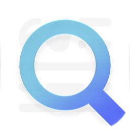

LensPrivacy Policy
Effective 1 October 2026
Lens is a web browser for iPhone and iPad. It’s built so that what you do in it stays yours: there’s no account, no analytics, no ads and no tracking. I (the developer) don’t run any server that receives your browsing, and I can’t see anything you do in Lens.
This page explains exactly what Lens keeps, where it goes, and how to remove it.
What stays on your device
Lens keeps these on your iPhone or iPad only:
- History, open tabs, pinned sites and closed tabs, so you can find and reopen pages.
- Website data such as cookies, logins and cached pages, stored by Apple’s WebKit the way Safari stores them.
- Site icons, fetched from the sites you visit, so history and pins look familiar.
- Downloads you haven’t saved yet. Unsaved downloads are deleted automatically after the period you choose in Settings.
- Your settings and per-site choices, such as zoom, Reader, fullscreen and things you’ve hidden on a page.
You can clear history, website data and downloads at any time in Settings, or forget everything about one site with Forget This Website in the page menu.
Private tabs
Private tabs are never written to disk. They don’t add to history, aren’t synced, and don’t save site icons. Their cookies and website data live in memory and are erased, along with their downloads, when you close your last private tab. You can lock private tabs with Face ID.
iCloud sync
If you’re signed in to iCloud, Lens can keep your pins, settings, history and open tabs in step across your devices. You can turn sync off, or turn off only history sync, in Settings.
- Sync uses your own private iCloud database. It is not a Lens server, and I can’t access it.
- What’s stored there, including the addresses and titles of pages, your pins, your settings and when you visited, is end-to-end encrypted with keys only your devices have.
- Apple handles iCloud under Apple’s Privacy Policy. Apple can see that encrypted records exist, how big they are and when they changed, but not what’s in them.
- Private tabs are never synced.
Search and suggestions
When you search, your search goes to the search engine you picked in Settings (DuckDuckGo, Brave, Ecosia, Google or Bing), and that engine’s privacy policy applies. Settings shows a short summary of each engine’s practices.
With Search Suggestions on, what you type in the search field is sent to the same engine as you type, so it can suggest searches. Lens never sends web addresses for suggestions, and never fetches suggestions in private search. You can turn suggestions off in Settings.
Content blocking
Lens blocks known ads and trackers using EasyList, EasyPrivacy and the EasyList Cookie List. About once a day it checks lists.angelakismax.com for updated lists. That request contains nothing about you or your browsing: it only asks for the latest files. The files are hosted on GitHub Pages and delivered through Cloudflare. Like any web host, they see the IP address a request comes from and may keep standard server logs under their own privacy policies (GitHub, Cloudflare). I don’t receive those logs, and there are no analytics, cookies or tracking on these files.
Features that work on your device
- Translation uses Apple’s on-device Translation. Page text is never sent anywhere to be translated; iOS may download language files from Apple the first time.
- Reader prepares articles on your device.
- Handoff offers the page you’re on to your own nearby Apple devices, through Apple. Private tabs are never offered.
Permissions
Lens asks for access only when you use something that needs it:
- Camera, microphone and location are only for websites that ask, and only after you allow it. iOS asks you first, and you can change this anytime in the Settings app.
- Photos (add only) is used to save an image you choose to your library.
- Face ID locks private tabs. It’s handled entirely by iOS, and Lens never receives your face data.
Websites you visit
Websites have their own privacy policies, and they can see what any browser shows them. Lens reduces tracking by blocking known trackers, removing tracking codes from links, upgrading connections to HTTPS and keeping private tabs separate, but it can’t control what a site itself collects.
Children
Lens doesn’t collect personal information from anyone, including children.
Changes
If this policy changes, the new version will be posted here with a new effective date.
Contact
Questions? Email made@angelakismax.com.